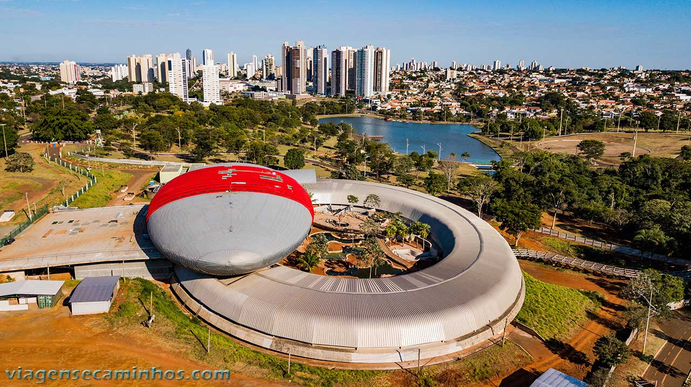

Mato Grosso do Sul (MS) é um estado brasileiro localizado na região Centro-Oeste, com fronteira com Bolívia e Paraguai. A capital é Campo Grande, e sua economia é baseada na agricultura, especialmente a produção de grãos e oleaginosas. O estado é conhecido pelo Pantanal, a maior planície inundável do mundo
